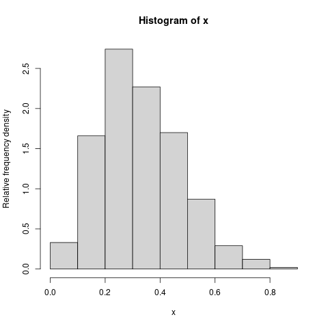

Video for this section
A PDF can look surprisingly complicated. We shall explore the general form later when we shall
learn about something called the Lebesgue integral. Fortunately, for all practical applications the PDF is quite simple:
it is positive and Riemann integrable (in fact, usually continuous) on some interval, and vanishes outside it. We
shall exclusively work with such PDFs. There
is a simple characterisation of such densities:
We shall prove it soon. But first some examples.
EXAMPLE 1:
$f(x) = \left\{\begin{array}{ll}3x^2&\text{if }x\in (0,1)\\ 0&\text{otherwise.}\end{array}\right.$
is one density.
■
The supporting interval may be unbounded.
EXAMPLE 2:
$f(x) = \left\{\begin{array}{ll}2e^{-2x}&\text{if }x\in (0,\infty)\\ 0&\text{otherwise.}\end{array}\right.$
is a density.
■
The density may be unbounded.
EXAMPLE 3:
$f(x) = \left\{\begin{array}{ll}\frac{1}{\pi\sqrt{x(1-x)}}&\text{if }x\in (0,1)\\ 0&\text{otherwise.}\end{array}\right.$
is a density.
■
Both the density and the supporting interval may be unbounded.
EXAMPLE 4:
$f(x) = \left\{\begin{array}{ll}cx^{-\frac 12} e^{-x/2}&\text{if }x\in (0,\infty)\\ 0&\text{otherwise.}\end{array}\right.$
is a density.
■
EXERCISE 9: Is $f(x) = \frac{1}{\pi(1+x^2)}$ a density?
EXERCISE 10: Is it possible to find $c\in{\mathbb R}$ such that $f(x)=ce^{-|x|}$ is a density? Sketch the graph of $f(x).$
EXERCISE 11: Is it possible to find $c\in{\mathbb R}$ such that $f(x)=\left\{\begin{array}{ll}\frac{c}{x}&\text{if }x>0\\ 0&\text{otherwise.}\end{array}\right.$ is a density?
Video for this section
We know that the CDF of a random variable must satisfy the following conditions:
$F(x)$ must be non-decreasing.
$\lim_{x\rightarrow-\infty} F(x) = 0.$
$\lim_{x\rightarrow\infty} F(x) = 1.$
$F$ must be right continuous.
Conversely, the fundamental theorem of probability guarantees that any $F:{\mathbb R}\rightarrow[0,1]$ with these properties must
be the CDF of some random variable (i.e., there must exist some probability space and a random variable defined on it with
$F$ as the CDF.
We have a similar characterisation for densities as well. This is given in the next theorem.
Let us start proving the theorem.
Let $F(x) = \int_{- \infty}^x f(t)\, dt.$
Then
$F(x)$ is non-decreasing, because $f$ is non-negative.
$\lim_{x\rightarrow\infty} F(x) = 1$, since $\int_{-\infty}^\infty f(x)\, dx = 1.$
Take any $a\in{\mathbb R}.$
Case 1: $f$ is bounded by some $B>0$ in a neighbourhood of $a$:
Then for any $x$ in that neighbourhood, we have
$|F(x)-F(a)| = \left|\int_a^{x} f(x)\, dx\right|\leq B|x-a|\rightarrow 0$
as $x\rightarrow a.$
Case 2: $f$ is unbounded in every neighbourhood of $a$: Here the result will follow from property of
improper Riemann integrals. We shall explore this in the exercies below.
The proof is not yet over. But let us solve some problems to digest the argument so far.
EXERCISE 12:
Consider a density with a graph as shown below.
Find $F(a).$ Then express $F(x)-F(a)$ as the difference of two integrals (you may use
$b$ for this). Finally show that $\lim_{x\rightarrow a+} F(x)-F(a) = 0.$
EXERCISE 13:
Consider the same density as in the last exercise.
Show (trivially) that $\lim_{y\rightarrow a-} F(y)-F(a) = 0.$
Video for this section
So by the fundamental theorem of probability, there exists a random variable $X$ with CDF $F(x).$
To complete the proof we need to show that $X$ has PDF $f(x),$ i.e.,
Target
$\forall a \leq b~~P(a \leq X \leq b) = \int_a^b f(t)\, dt.$
$\forall a,b$
Take any $a\leq b.$
Here $F$ is a continuous function. So $P(X=a) = 0.$
Hence
$$P(a\leq X\leq b) = P(a < X\leq b) = P(X\leq b)-P(X\leq a) = F(b)-F(a) = \int_{-\infty}^b f(t)\, dt-\int_{-\infty}^a f(t)\, dt = \int_a^b f(t)\, dt,$$
completing the proof.
It is possible to recover a density from the CDF as follows. Let $F$ be the CDF having a density. Then
$F$ must be continuous. Define $f$ as follows;
$$f(x) = \left\{\begin{array}{ll}F'(x)&\text{if }\mbox{it exists}\\ 0&\text{otherwise.}\end{array}\right. $$
This $f$ must be a PDF for our CDF. For most applications, $F$ will fail to be differentiable at only finitely
many points.
For this technique to work $F$ must actually have a density. Otherwise, the
function $f(x)$ obtained by this procedure will not be a density.
For example, for a
discrete distribution, the CDF is a step function, and so the above prescription would lead to $f(x)\equiv 0.$
If you are given a CDF $F$, and you do not know if it has a density, then you could still define $f$ as above,
and actually check if $\forall x\in{\mathbb R}~~F(x) = \int_{-\infty}^x f(t)\, dt.$
Video for this section
It is a somewhat disconcerting fact that density of a distribution is not unique. For intance,
changing a density at any countable number of points to arbitrary non-negative values would still
keep it a density for the same distribution.
EXAMPLE 5:
$f(x)=\left\{\begin{array}{ll}2e^{-2x}&\text{if }x>0\\ 0&\text{otherwise.}\end{array}\right.$ and
$f(x)=\left\{\begin{array}{ll}2e^{-2x}&\text{if }x>0,\,x\neq3\\ 10000&\text{if }x=3\\ 0&\text{otherwise.}\end{array}\right.$
are both densities corresponding to the same distribution.
■
However, the following result provides some relief.
Proof:
Let, if possible, $f(a)\neq g(a).$ Say $f(a)> g(a).$
Let $h(x) = f(x)-g(x).$ Then $h(x)$ is continuous at $x=a$ and $h(a)>0.$
So $\exists\delta>0~~\forall x\in (a-\delta,a+\delta)~~h(x)>\frac{h(a)}{2}.$
Hence $\int_{a-\delta}^{a+\delta} h(x)\, dx \geq \delta h(a) > 0.$
But this is impossible, since $\int_{a-\delta}^{a+\delta} f(x)\, dx =\int_{a-\delta}^{a+\delta} g(x)\, dx, $ since
both are equal to $P(a-\delta< X < a + \delta).$
[QED]
Indeed, we shall mostly work with random variables $X,$ for which there will be an density which will
be continuous over an interval
$I,$ for which $P(X\in I)=1.$
EXERCISE 20:
If $f,g:{\mathbb R}\rightarrow{\mathbb R}$ are two functions such that $\forall a\leq b~~\int_a^b f(x)\, dx = \int_a^b g(x)\, dx,$ and
they are both continuous at $x=c,$ then show that $f(c)=g(c).$
Let, if possible, $f(c)\neq g(c).$ Without loss of generality $f(c)< g(c),$ say.
Consider $h(x) = g(x)-h(x).$
Then $h$ is continuous at $c$ and $h(c)>0.$
Note that it is enough to show that
$$\exists \delta>0~~\int_{a-\delta}^{a+\delta} h(x)\, dx>0.\hspace{1in} \mbox{(*)}$$
This will complete the
contradiction, because then $\int_{a-\delta}^{a+\delta} g(x)\, dx>\int_{a-\delta}^{a+\delta} f(x)\, dx,$
contradicting the given condition.
Since $h(x)$ is continuous at $x=c,$ we have
$$\forall \epsilon>0~~\exists \delta>0~~\forall x\in(c-\delta,c+\delta)~~h(x)\in(h(c)-\epsilon,h(c)+\epsilon).$$
Choose $\epsilon= \frac{h(c)}{2}>0.$
Then
$$\exists \delta>0~~\forall x\in(c-\delta,c+\delta)~~h(x)\in(h(c)-\epsilon,h(c)+\epsilon).$$
For any $x\in(c-\delta,c+\delta)$ we have $h(x)> h(c)-\epsilon = 2 \epsilon-\epsilon = \epsilon>0.$
So $\int_{a-\delta}^{a+\delta} h(x)\, dx\geq 2\delta \epsilon>0.$
Hence we have shown (*), completing the proof.
EXERCISE 21:
State true or false: if $f(x)$ is a density, and $g(x)$ is obtained by changing $f(x)$ at only countably
many points, then $g(x)$ is also a density corresponding to the same distribution. (Assume that $g(x)$ is non-negative).
EXERCISE 22: State true or false: If a distribution has a density, then it also has a continuous density.
EXERCISE 23: In this problem we shall say that a density $f$ "sits on" an interval
$I$ if all the three conditions hold:
$\forall
x\in I~~f(x)>0$
$f(x)$ vanishes outside $I.$
$f$ is continuous on $I$.
Let $f,g$ be two densities
for the same distribution. If $f$ "sits on"an interval $I$ and $g$ "sits on"
an interval $J$, then show that the closures of $I$ and $J$ must match. (This closure is called the
support of the distribution).
Video for this section
If $X$ has a density $f(x)$ which is continuous at $x=a$ then $f(a)$ measures
"something like $P(X\approx a)$". However, there are not even approximately equal. In
particular, $f(a)$ may very well exceed $1.$ The precise statement is
$$f(a) = \lim_{\epsilon\rightarrow 0+} \frac{P(X\in (a-\epsilon, a+\epsilon))}{2 \epsilon}.$$
Thus, if we have a density like the following, then $X$ is more likely to take values near $B$ than near $A$
or $C.$
Just like everything else in probability theory, densities are also born out of statistical
regularity. You might remember that probability came out of limit of proportions, and hence PMF
was born out of barplots of relative frequencies. Similarly, densities are born of histograms, a graphical device to show
relative frequency densities. Suppose that we have a random variable $X$ that can assume all values in an interval
$[a,b].$ If we repeat the underlying random experiment a large number of times independently, then we shall get many
values of $X$, that we can show along a number line:
Random values of $X$ along the number line.
This plot, however, is too clutterred as many points get plotted on top of each other. A more lucid plot is the histogram:

A histogram of the same random values of $X$.
Here we have partitioned the range of $X$ into a number of subintervals (or
bin s) and have computed the
relative frequency density
for each bin as
$$\mbox{rel. freq density of a bin} = \frac{\mbox{number of points in the bin}}{\mbox{sample size}\times
\mbox{bin width}}.$$
Then we have erected a rectangle on each bin with height equal to the relative frequency density for that bin. As sample
size tends to infinity, the shape of the histogram stabilises due to statistical regularity. If we now make the bins finer
and finer, then the limiting shape of the histogram approaches a certain shape, which is the PDF.
EXERCISE 24: Get/download a large data set on some continuous variable (height, weight, blood pressure
etc). Make a histogram of the first half using R:
hist(dat[1:(n/2)], prob=T)
Here dat is the array storing the values. The length of the array is n. Notice the shape.
Now make a histogram of the rest of the data:
hist(dat[(n/2):n], prob=T)
If n is large enough (say at least 5000), then you should see striking similarity between the shapes of these
two histograms.
EXERCISE 25: This is a more specific version of the last exercise, where we shall work with audio data.
Record some audio data of ambitent noise (e.g., sound of fan, AC, crowded place) using your laptop
or mobile. (You should get a
file with .wav
or .mp3 extension). If you cannot record yourself, you may use this hardly audible audio file test.wav of me rubbing my hands together. Download it your machine. Load it using R:
install.packages('tuneR') #You need to do this only once (with net connection)
library(tuneR)
dat = readWave('test.wav') #You may need to give the entire path of the file
hist(dat@left,probability=TRUE)
hist(dat@left,breaks=200,probability=TRUE) #finer histogram
EXERCISE 26:
Let $X_1,X_2,...$ be IID with some common density $f(x).$ Fix any $a<b.$ Let $Y_n$ be the proportion
of the $X_1,...,X_n$ landing in $[a,b].$ (i.e., you count the number of $X_i$'s inside $[a,b]$ for
$i=1,...,n,$ and divide that number by $n$). Show that $Y_n$ converges $\int_a^b f(x)\, dx.$ [Hint:
Use the weak law of large numbers that you learned last semester.]
Video for this section
It may seem counterintuitive that $\forall a\in{\mathbb R}~~P(X=a)=0$, and yet $P(X\in{\mathbb R})=1.$ There are two ways to
think about it:
A straight line segment consists of individual points, each of which has lenth zero, yet
the segment does have strictly positive length. The intuituion that lengths of constituents add
up to the length of thw whole works only for the countable case.
But when we carry out the random experiment behind $X$ we do get some value $a.$
If $P(X=a)=0,$ then shouldn't $\{X=a\}$ be an impossible event? Actually, when we say
$\{X=a\}$ we are making a measurement, and all measurements have finite precision. If the
precision of the measurement is $\epsilon,$ then the satement ''$X$ is found to be
$a$'' actually means $X\in\left[a-\frac \epsilon2, a+\frac \epsilon2\right),$ which indeed has some positive probability.
EXERCISE 27:
If $X$ has density $e^{-x}$ for $x>0$ (and 0 else), then show that
$$\lim_{\epsilon\rightarrow0+}\frac{P(1-\epsilon,1+\epsilon)}{2 \epsilon} = \frac 1e.$$
::
EXERCISE 28:
If $X$ has density $e^{-x}$ for $x>0$ (and 0 else), then show that
$$\lim_{\epsilon\rightarrow0+}\frac{P[2,2+\epsilon)}{\epsilon} = e^{-2}.$$
EXERCISE 29:
If $X$ has density $f(x)$ which is continuous over a neighbourhood of $x=a,$ then prove that
$$\lim_{\epsilon\rightarrow0+}\frac{P(a-\epsilon,a+\epsilon)}{2 \epsilon} = f(a).$$
Can you drop the continuity assumption?
EXERCISE 30:
Let $X$ have density $f(x)=\left\{\begin{array}{ll}1&\text{if }x\in(0,1)\\ 0&\text{otherwise.}\end{array}\right.$ Find
$$\lim_{\epsilon\rightarrow0+}\frac{P(1-\epsilon,1+\epsilon)}{2 \epsilon}.$$
Video for this section
We had already defined expectation of a random variable in general. That definition reduces to the following.
We shall prove this near the end of this course. Until then we shall treat this as the definition
of $E(X)$ when $X$ has density $f.$
If $X$ can take negative values, then we again use the $X_+$, $X_-$ technique.
The following familiar properties of expectation (which are actually consequences of the general
definition) can be easily shown to hold in this special case:
Both these properties follow directly from properties of integration.
The following theorem is also of a familiar form:
While we shall not prove this here, you should be aware of one subtle implication. Suppose that
$X$ has density $f$ and we are trying to find $E(X^2).$ Then here are two ways of proceeding:
Work out the distribution of $Y=X^2$ and find $E(Y)$ using the general
definition, this may be very compicated to do in practice, but at least one can do this in principle.
Use the above theorem.
Both the approaches should produce the same result. This is the main implication of the theorem. The usefulness of the theorem
lies in the fact that the second approach is usually much easier than the first.
We define $V(X)$ and the other moments as usual. Their
properties (e.g., Chebyshev inequality) are intact.
An important class of distributions are called life span distributions. Imagine a
huge population of perishable objects that have a well-defined life span. (e.g., animals,
electronic components, but not vegetables, as "death" is not well-defined there).
We pick one element at random and follow it until it dies. Let $X$ be the age at death. Clearly, $X$ is a non-negative
random variable. Typically we consider it as having a density. Then a quantity of interest is what is the chance of death
at a given age. This gives rise to the following definition.
We can think of it as
$$\lim_{\delta t\rightarrow 0+} \frac{P(X\leq t+\delta t | X > t)}{\delta t} =\lim_{\delta t\rightarrow 0+} \frac{P(X\in
[t,t+\delta t] }{ P(X > t) \delta t}.$$
EXAMPLE 6: Let $X$ have density
$$f(x) = \left\{\begin{array}{ll}e^{-x}&\text{if }x>0\\ 0&\text{otherwise.}\end{array}\right.. $$
Find its hazard rate function.
You may like to use the result $\int_0^\infty e^{-x^2/2}, dx = \sqrt{\frac \pi2}.$
For the next three problems you need to work out the distribution from a given hazard function. Use $f = F'$ to turn
the definition of hazard function into a differential equation:
$$\frac{F'(x)}{1-F(x)} = h(x),$$
and then solve it. Find the value for the constant of integration by using the fact that $F(x)\rightarrow 0$ as $x\rightarrow -\infty.$
::
Video for this section
Last semester we often worked wih the discrete uniform distribution, e.g., fair coin toss, fair die roll, drawing a card
from a well-shuffled deck, picking a ball at random, etc. For the continuous case, the analog is
the uniform distribution.
EXAMPLE 7: Let $Q$ be chosen randomly from the unit square in ${\mathbb R}^2.$ If
$Q\equiv(X,Y)$, then find $P(X< Y).$
SOLUTION:
Look at the following diagram.
Here $|A| = 1$ and $|B| = \frac 12.$ So $P(X < Y) = P( (X,Y)\in B) = \frac{ |B| }{ |A| } = \frac 12.$
■
EXAMPLE 8: Let $X$ be uniformly distirbuted over $[0,1].$ Then find
$P(X\leq -1)$
$P(X\leq 0)$
$P\left(X\leq \frac 12\right)$
$P(X\leq 1)$
$P(X\leq 2)$
Sketch the CDF of $X.$ Does $X$ have a PDF?
SOLUTION:
$P(X\leq -1)=0,$
$P(X\leq 0)=0,$
$P\left(X\leq \frac 12\right)=\frac 12,$
$P(X\leq 1)=1,$
$P(X\leq 2)=1.$
Sketch of the CDF
Yes, by differentiating it, we get a PDF
$$f(x) = \left\{\begin{array}{ll}1&\text{if }x\in(0,1)\\ 0&\text{otherwise.}\end{array}\right.. $$
We could replace $(0,1)$ by $[0,1]$ or $(0,1]$ or $[1,0).$
■


 The answer should not involve any limit of $F_X.$
The answer should not involve any limit of $F_X.$